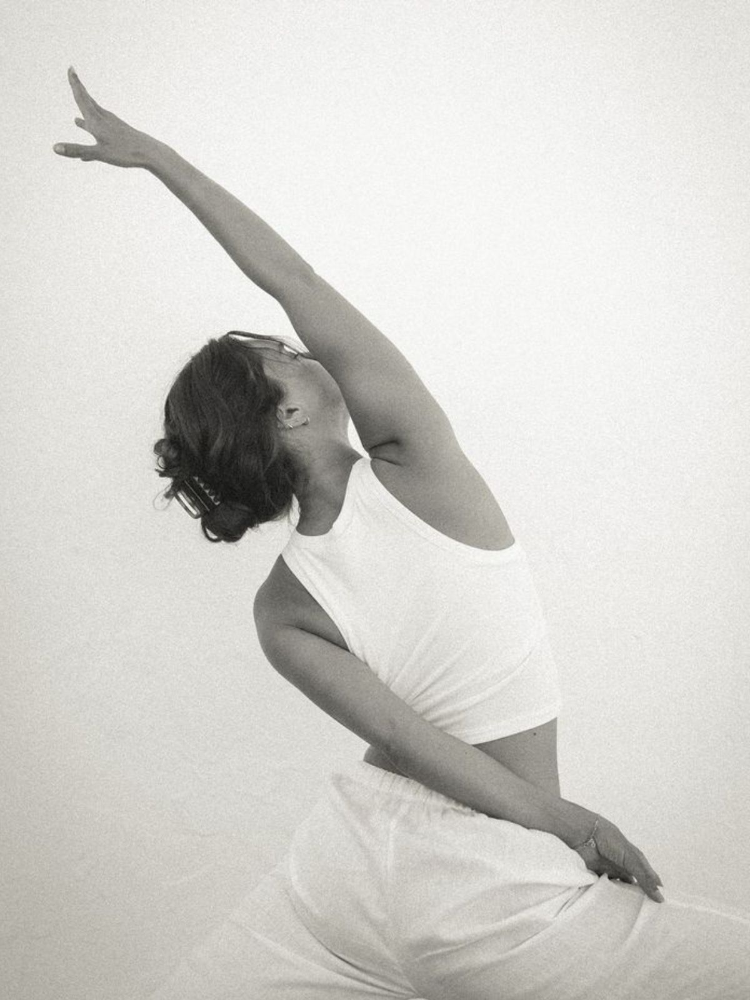
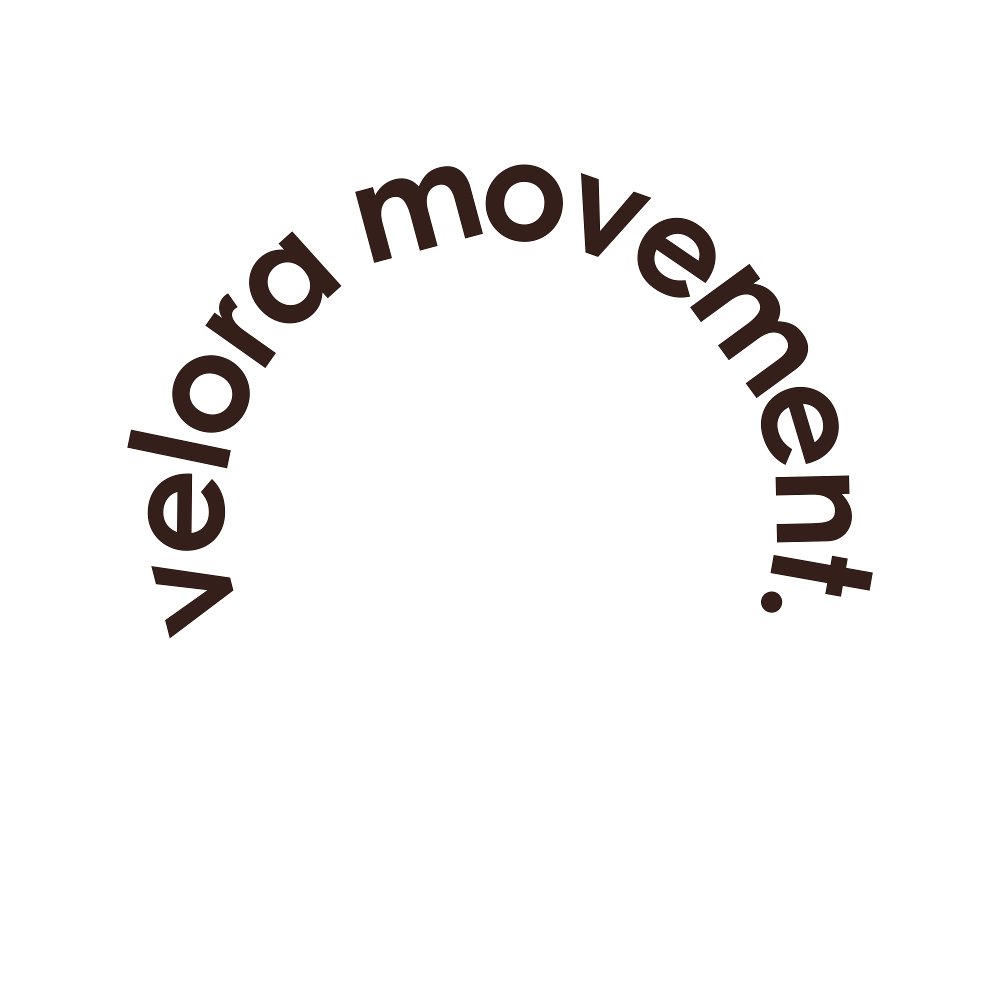

49 €/ kk
- 1 joogatunti / vko
- 1 stretching / vko
- Online-jäsenyys

Velora on lämmin ja kiireetön studio, jonne jokainen on tervetullut omana itsenään. Täällä ei suoriteta eikä verrata, vaan hengitetään, liikutaan ja hidastetaan yhdessä, omaan tahtiin. Tule mukaan yhteisöön, joka kannustaa ja tekee tilaa juuri sinun hyvinvoinnillesi.
Liity asiakkaaksiJäsenenä saat jäsenhinnat tunneista, ennakkovaraukset, kutsut workshoppeihin ja yhteislenkeille sekä vain jäsenille räätälöidyt tarjoukset.
Selkeä valikoima, oma rytmisi. Valitse laji, joka tuntuu sinun keholtasi juuri nyt.
Hinnastoon
Meille ei tarvitse tulla valmiina. Tule sellaisena kuin olet, omaan tahtiisi, omaan kehoosi luottaen.
Kolme tasoa, oma rytmisi. Valitse paketti, joka sopii viikkoosi, vaihda tasoa milloin tahansa, ilman kiirettä.
Velorassa sain luvan hidastaa. Enää en suorita, vaan nautin liikkeestä ja hengityksestä. Olo on kevyempi niin matolla kuin sen ulkopuolella.
Lämmin ja kiireetön tunnelma sai minut palaamaan viikoittain. Uni on syventynyt ja stressi helpottanut huomattavasti, ilman suorittamisen tunnetta.
Ei peilejä, ei kilpailua, vain kannustava yhteisö. Tunnen kuuluvani joukkoon ensimmäistä kertaa vuosiin, ja se näkyy koko viikossani.
Tunnin ajan saan olla vain läsnä. Palaan kotiin levollisempana ja läsnäolevampana myös perheelleni, ilman suorittamisen painetta.
Selkä on kiittänyt ja mieli rauhoittunut. Pieni viikoittainen hetki on muuttunut koko viikkoa kannattelevaksi voimavaraksi.
Täällä ei kilpailla kelloa vastaan. Opin kuuntelemaan kehoani ja nauttimaan liikkeestä omaan tahtiini, juuri sellaisena kuin olen.
Vuosien jälkeen uskallan taas liikkua ilman pelkoa. Velorassa keho saa olla juuri sellainen kuin se on, ja se tuntuu vapauttavalta.
Ohjaajat muistavat nimeni ja huomioivat juuri minut. Tällaista lämpöä en ole kokenut missään muualla salilla.
Opin päästämään irti suorittamisesta. Nyt liike ja hengitys kulkevat yhdessä, ja arki tuntuu kevyemmältä.
Odotan jokaista tuntia. Se on hetki vain itselleni, ilman kiirettä ja vaatimuksia, ja sen vaikutus kantaa läpi koko viikon.

Velora on paikka, jossa saan vihdoin hengittää. En tullut tänne muuttumaan, vaan löytämään takaisin itseeni.
Jos meidän paketit eivät tunnu omalta, voit varata yksittäisen tunnin suoraan varauskalenterista. Varaaminen edellyttää sisäänkirjautumista, joten liity ensin asiakkaaksemme.
Liity asiakkaaksiJo yksi tunti viikossa riittää käynnistämään muutoksen. Aloita pienestä, keho ja mieli seuraavat perässä.
Liity jäseneksi →